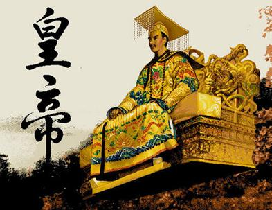
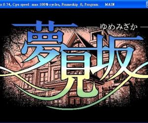
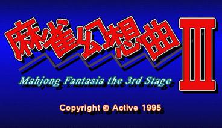
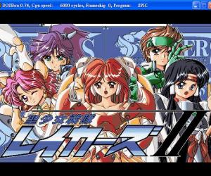
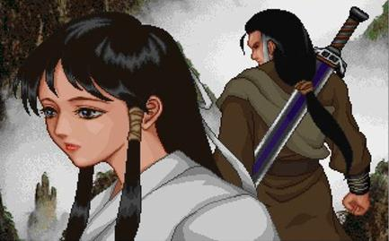
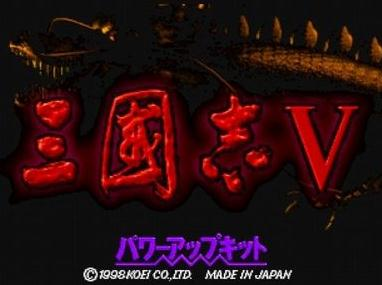

dos游戏

皇帝
《皇帝》是DOS年代由全崴资讯C&E公司发行的一款角色扮演类游戏。在游戏中你要做一个真正的皇帝，领导你的大臣们，处理国家政治、军事等各项事务。除了日理万机，你还要抽空饱读诗书，学习琴棋书画，甚至教育子女。而且，晚上还有后妃侍寝哦！
下载

梦见坡(DOS)
梦见坡(DOS)剧情描写披萨送货小弟町田康平奉店长之命，前去梦见坡豪宅推销披萨，却意外发现该豪宅受欲望邪灵诅咒，幸由神社巫女铃子的帮忙驱除邪灵，救出众人，同时主角也找到了真爱。整个剧情并不长，为一单线剧情，但安排得相当紧凑且煽情，同时图片美工也不错，算是一个不错的游戏。
下载

麻雀幻想曲3（DOS）
麻将幻想曲3，又名麻雀幻想曲3，为您提供的是集成dosbox的游戏版本，安装即可完美运行游戏。游戏可支持窗口化运行与全屏运行2种方式。 《麻雀幻想曲3》画面比前作精美许多，也去掉了文字冒险式的对话选择框。这次玩家的任务是扮演皇家卫士，在国难当头之时保护公主，寻找并打败邪恶的魔女。路上你仍然免不了遇上重重险阻（挡路的自然大都是美少女啦），要解决争端，就在麻将桌上一决胜负吧！ 游戏拥有冒险故事模式和美女对战模式可以选择。
下载

圣少女战队2(DOS)
圣少女战队2(DOS)剧情延续一代，描写卡鲁邦帝国邪帝加尔文被消灭后，另一迪奴帝国风闻雷卡水晶的威力，于是前来地球向圣少女战队争夺，但军队最后却被前卡鲁邦帝国军师蕾蒂亚巧计夺取，并利用法术使加尔文复活，于是圣少女战队再一次消灭加尔文，保卫了地球的和平。本代游戏的角色在升级后，属性仍未变动，且失去了一代有一次全体复原的机会，使得战斗变得较为困难了许多。此外，本代开始有武器防具可选择装备，但均为固定，无法买卖，使得许多武器形同废物。不过本代的剧情设计比一代好多了，剧情与图片也较一代为好，因此还算是可以玩的一个游戏。
下载
江南才子唐伯虎完整版
《江南才子唐伯虎》是智冠电子[北京]有限公司于1999年3月16日发行的一款角色扮演游戏，此游戏节奏明朗，打斗诙谐，是一款不错的轻快风格游戏。
下载

神雕侠侣dos版
神雕侠侣dos版这个是dosbox集成版，解压即可玩，内有说明，一看必懂。据说有二部，这只是第一部到杨过被砍手臂结束，后部我目前没有，谁有欢迎高尚上传，谢谢（游戏没玩过不负责攻略问题，大家自己摸索）
下载
仙剑奇侠传(dos版)
仙剑奇侠传(DOS版游戏)，简称仙剑，是由台湾大宇资讯出品的一款角色扮演游戏，故事以武侠为题材，以宿命作为主轴。它以完全自创自制的故事、纠葛感人的情节、优美动听的音乐风靡了整个华人市场，让玩家不只是完成任务，而是在游戏过程中融入了更多的情感与感动。游戏在推出后获得佳评不断，并持续很长时间，成为经典中的经典。
下载

三国志5(dos版)
《三国志5》登场武将多达500名，可选择性相当丰富，可以通过升级自己的角色来提高其特殊能力。游戏中会出现包括鹤翼、鱼鳞在内的12种有名阵型，增加到战斗系统之中。英雄的声名会对战略方面产生影响，指令数量也会得到变化。本游戏支持多达7个剧本的最大人数为8人的联机对战，从“黄巾之乱”到“星落五丈原”，基本总括了整个三国的历史。
下载
金庸群侠传DOS原版
此游戏把金庸先生“飞雪连天射白鹿，笑书神侠倚碧鸳”等14部小说中一些脍炙人口的片段，如六大门派围攻光明顶，冰火岛，英雄大会等融合在一起，改编而成，具有14个支线任务。玩家可自由选择游戏路线，其间基本上没有因果关系，只不过其中有一些任务相对比较难，因此需先完成别的任务才成。游戏的剧情是开放的，游戏地图也是开放的。在游戏中玩家可邀5位非主角控制的人物(NPC)，参加队伍，而且游戏中如果行善做好事多，则玩家的品德属性值高，这样一些人物才愿意与你为伍（但是，一些人物的加入会使你的品德属性降低，比如采花大盗--田伯光）。反之，如果杀戮过重，最后过关时将遇到正派大侠们连手攻击，就较难回到现实世界里来了。
下载
等待添加更多游戏